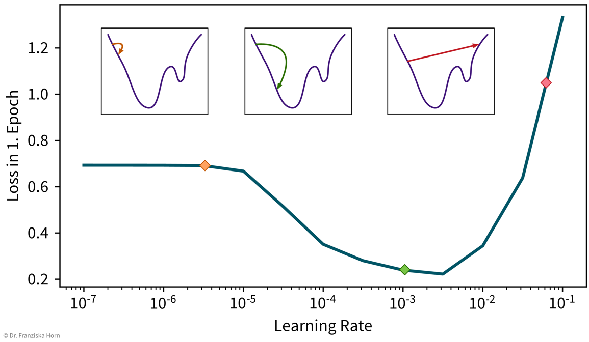

Deep Learning (Neural Networks)

The next topic is “deep learning”, i.e., neural networks, the most sophisticated model class, which can be used to solve extremely complex problems (besides regular supervised learning task), but that are also rather data hungry (depending on the size of the network).
Overview
- Recap: Linear Models
-
Prediction is a linear combination of input features (and intercept / bias term \(b\)):
\[f(\mathbf{x}; \mathbf{w}) = b + \langle\mathbf{w},\mathbf{x}\rangle = b + \sum_{k=1}^d w_k \cdot x_k = \hat{y}\]In the case of multiple outputs \(\mathbf{y}\) (e.g., in a multi-class classification problem, where \(\mathbf{y}\) could contain the probabilities for all classes):
\[f(\mathbf{x}; W) = \mathbf{x^\top}W = \mathbf{\hat{y}}\](for simplicity, we omit the bias term \(b\) here; using a bias term is equivalent to including an additional input feature that is always 1).
- Intuitive Explanation of Neural Networks
-
[Adapted from: “AI for everyone” by Andrew Ng (coursera.org)]
A very simple linear model with one input and one output variable and a non-linearity:
 Let’s say you have an online shop and are trying to predict how much of a product you will sell in the next month. The price you are willing to sell the product for will obviously influence the demand, as people are trying to get a good deal, i.e., the lower the price, the higher the demand; a negative correlation that can be captured by a linear model. However, the demand will never be below zero (i.e., when the price is very high, people wont suddenly return the product), so we need to adapt the model such that the predicted output is never negative. This can be achieved by applying the max function, in this context also called a non-linear activation function (a rectified linear unit (ReLU) to be more precise), to the output of the linear model, so that now when the linear model would return a negative value, we instead predict 0. Together, this functional relationship can be visualized as a circle with one input (price) and one output (demand), where the incoming arrow represents the weight multiplied with the input feature and the S-curve in the circle indicates that a non-linear activation function is applied to the result. We will later see these circles as a single unit or “neuron” of a neural network.
Let’s say you have an online shop and are trying to predict how much of a product you will sell in the next month. The price you are willing to sell the product for will obviously influence the demand, as people are trying to get a good deal, i.e., the lower the price, the higher the demand; a negative correlation that can be captured by a linear model. However, the demand will never be below zero (i.e., when the price is very high, people wont suddenly return the product), so we need to adapt the model such that the predicted output is never negative. This can be achieved by applying the max function, in this context also called a non-linear activation function (a rectified linear unit (ReLU) to be more precise), to the output of the linear model, so that now when the linear model would return a negative value, we instead predict 0. Together, this functional relationship can be visualized as a circle with one input (price) and one output (demand), where the incoming arrow represents the weight multiplied with the input feature and the S-curve in the circle indicates that a non-linear activation function is applied to the result. We will later see these circles as a single unit or “neuron” of a neural network.Usually, even with linear models you have multiple inputs:
 Using additional input variables will probably improve your prediction. You already know how to include them in a linear model.
Using additional input variables will probably improve your prediction. You already know how to include them in a linear model.To further improve the performance, you could now manually construct more informative features from the original inputs by combining them in meaningful ways (→ feature engineering) before computing the output:
 You can probably come up with a few more informative features, derived from the original input variables, to further improve the prediction accuracy. For example, since you’re running an online shop, the customers also have to pay shipping fees, which means to reflect the true affordability of the product, you actually need to combine the product price with the shipping costs. Next, the customers are interested in high quality products. However, not only the actual quality of the raw materials you used to make your product influences how your customers perceive the product, but you can also reinforce the impression that your product is of high quality with a marketing campaign. Furthermore, a high price also suggests that your product is superior. This means by creating these additional features, the price can actually contribute in two ways towards the final prediction: while, on the one hand, a lower price is beneficial for the affordability of the product, a higher price, on the other hand, will result in a larger perceived quality. While in this toy example it was possible to construct such features manually, the nice thing about neural networks is that they do exactly that automatically: By using multiple layers, i.e., stacking multiple linear models (with non-linear activation functions) on top of each other, it is possible to create more and more complex combinations of the original input features, which can improve the performance of the model.
You can probably come up with a few more informative features, derived from the original input variables, to further improve the prediction accuracy. For example, since you’re running an online shop, the customers also have to pay shipping fees, which means to reflect the true affordability of the product, you actually need to combine the product price with the shipping costs. Next, the customers are interested in high quality products. However, not only the actual quality of the raw materials you used to make your product influences how your customers perceive the product, but you can also reinforce the impression that your product is of high quality with a marketing campaign. Furthermore, a high price also suggests that your product is superior. This means by creating these additional features, the price can actually contribute in two ways towards the final prediction: while, on the one hand, a lower price is beneficial for the affordability of the product, a higher price, on the other hand, will result in a larger perceived quality. While in this toy example it was possible to construct such features manually, the nice thing about neural networks is that they do exactly that automatically: By using multiple layers, i.e., stacking multiple linear models (with non-linear activation functions) on top of each other, it is possible to create more and more complex combinations of the original input features, which can improve the performance of the model.⇒ the power of neural networks comes from constructing more meaningful feature representations automatically by using multiple layers (i.e., by being “deep”).
Since different tasks (and especially different types of input data) benefit from different feature representations, there exist different types of neural network architectures to accommodate this, e.g.
-
→ Feed Forward Neural Networks (FFNNs) for ‘normal’ data
-
→ Convolutional Neural Networks (CNNs) for images
-
→ Recurrent Neural Networks (RNNs) for sequential data like text or time series
We will talk about these different architectures in more detail in the next section.
NN architectures
Just like domain-specific feature engineering can result in vastly improved model performances, it really pays off to construct a neural network architecture tailored to the task.
Feed Forward Neural Network (FFNN)
This is the original and most straightforward neural network architecture, which you’ve already seen in the initial example. Each layer here is basically a linear model, i.e., it consists of a weight matrix \(W_i\) and some non-linear activation function \(\sigma_i\) that is applied to the output. These layers are applied sequentially to the input features \(\mathbf{x}\), i.e., the network computes a composite function (in this case for 3 layers):

Recurrent Neural Network (RNN)
Recurrent neural networks are great for sequential data such as time series data or text (i.e., a sequence of words).
In its simplest form, a RNN is like a FFNN, but with additional recurrent connections \(W_h\) in the hidden layer to create a memory of the past:
It’s easiest when thinking about the RNN unrolled in time:

The original RNN layer uses a very simple update rule for the hidden state, but there also exist more advanced types of RNNs, like the Long Short Term Memory (LSTM) network or Gated Recurrent Units (GRU), which define more complex rules for how to combine the new input with the existing hidden state, i.e., they learn in more detail what to remember and which parts to forget, which can be beneficial when the data consists of longer sequences.
The cool thing about RNNs is that they can process input sequences of varying length (where one sequence represents one data point, e.g., a text document). Whereas all methods that we’ve discussed so far always expected the feature vectors that represent one data point to have a fixed dimensionality, for RNNs, while the input at a single time step (i.e., \(\mathbf{x}_t\) with \(t \in \{1, ..., T\}\)) is also a feature vector of a fixed dimensionality, the sequences themselves do not need to be of the same length \(T\) (e.g., text documents can consist of different numbers of words). This comes in especially handy for time series analysis, as you’ll see in the next chapter.
Useful in Natural Language Processing (NLP):
- RNNs can take word order into account, which is ignored in TF-IDF vectors
-
 This is an example architecture for a sentence classification task (e.g., sentiment analysis, i.e., deciding whether the text is positive or negative). The individual words in the sentence are represented as so-called word embeddings, which are just d-dimensional vectors that contain some (learned) information about the individual words (e.g., whether the word is more male or female; how these embeddings are created is discussed in the section on self-supervised learning below). The RNN is then fed the sentence word by word and at the end of the sentence, the final hidden state (which contains the accumulated information of the whole sentence) is used to make the prediction. Since the RNN processes the words in the sentence sequentially, the order of the words is taken into account (e.g., whether a “not” occurred before an adjective), and since we use word embeddings as inputs, which capture semantic and syntactic information about the words, similarity between individual words (e.g., synonyms) is captured, thereby creating more meaningful representations of text documents compared to TF-IDF vectors (at the expense of greater computational complexity).
This is an example architecture for a sentence classification task (e.g., sentiment analysis, i.e., deciding whether the text is positive or negative). The individual words in the sentence are represented as so-called word embeddings, which are just d-dimensional vectors that contain some (learned) information about the individual words (e.g., whether the word is more male or female; how these embeddings are created is discussed in the section on self-supervised learning below). The RNN is then fed the sentence word by word and at the end of the sentence, the final hidden state (which contains the accumulated information of the whole sentence) is used to make the prediction. Since the RNN processes the words in the sentence sequentially, the order of the words is taken into account (e.g., whether a “not” occurred before an adjective), and since we use word embeddings as inputs, which capture semantic and syntactic information about the words, similarity between individual words (e.g., synonyms) is captured, thereby creating more meaningful representations of text documents compared to TF-IDF vectors (at the expense of greater computational complexity).
Convolutional Neural Network (CNN)
Manual feature engineering for computer vision tasks is incredibly difficult. While humans recognize a multitude of objects in images without effort, it is hard to describe why we can identify what we see, e.g., which features allow us to distinguish a cat from a small dog. Deep learning had its first breakthrough success in this field, because neural networks, in particular CNNs, manage to learn meaningful feature representations of visual information through a hierarchy of layers.
General Principles & Advanced Architectures
When trying to solve a problem with a NN, always consider that the network needs to understand the inputs, as well as generate the appropriate outputs:

Here are two examples of neural network architectures that deal with somewhat unusual inputs and outputs and incorporate a lot of domain knowledge, which enables them to achieve state-of-the-art performance on the respective tasks:
- Predicting the 3D structure of a protein from its amino acid sequence with Alpha Fold
-
 https://deepmind.com/blog/article/alphafold-a-solution-to-a-50-year-old-grand-challenge-in-biology (30.11.2020)
https://deepmind.com/blog/article/alphafold-a-solution-to-a-50-year-old-grand-challenge-in-biology (30.11.2020) - Predicting properties of molecules with SchNet (which is an example of a Graph Neural Network (GNN))
-
 Schtt, Kristof T., et al. “Quantum-chemical insights from deep tensor neural networks.” Nature communications 8.1 (2017): 1-8.
Schtt, Kristof T., et al. “Quantum-chemical insights from deep tensor neural networks.” Nature communications 8.1 (2017): 1-8.
Tips & Tricks
Self-Supervised & Transfer Learning
Self-supervised learning is a very powerful technique with which neural networks can learn meaningful feature representations from unlabeled data. Using this technique is cheap since, like in unsupervised learning, it does not require any labels generated by human annotators. Instead, pseudo labels are generated from the inputs themselves by masking parts of it. For example, a network could be trained by giving it the first 5 words of a sentence as input and then asking it to predict what the next word should be. This way, the network learns some general statistics and knowledge about the world, similar to how human brains interpolate from the given information (e.g., in the blind spot test you can nicely observe how your brain predicts missing information from the given context). Self-supervised learning is often used to “pretrain” a neural network before using it on a supervised learning task (see transfer learning below).
NLP Example: Neural Network Language Models (e.g., word2vec → have a look at this blog article for more details) use self-supervised learning to generate word embeddings that capture semantic & syntactic relationships between the words (which is ignored in TF-IDF vectors, where each word dimension has the same distance to all other words):

→ these word embedding vectors can then be used as input to a RNN
Transfer learning is the idea of using what a network has learned before on a different task (e.g., a self-supervised learning task) as a starting point when tackling a new task. In practice, this means the weights of the network are initialized with (some of) the weights of a network trained on another task, before training the network on the new task. We also say that the network was pretrained on a source task before it is fine-tuned on the target task.
Typically, not all the weights of a target network are initialized with weights from a source network, but only those from the earlier layers, where the source network has learned some general principles that are not task specific (e.g., observe how the first layer of the CNN in the previous section had learned to detect edges, which seems like a relevant skill for pretty much all computer vision tasks). Often, using a pretrained network will give you a more robust solution and boost the prediction performance, especially if you only have a very small dataset for the target task available to train the network. However, since when training a neural network you’re trying to find weights that minimize your error function by iteratively improving the weights starting with some initialization, if this initialization is unfavorable because it is very far away from a good minimum (i.e., further away than a random initialization), e.g., because you’ve initialized the weights with those from a source network trained on a very different task, then this will actually hurt the performance, since the network first has to unlearn a lot of things from this unrelated task before it can learn the actual task. Therefore, transfer learning should only be used if the source and target tasks are “related enough”. Pretraining a network on a self-supervised learning task (i.e., a task that is just about understanding the world in general, not solving a different kind of specific task) usually works quite well though.
When using transfer learning, one question is whether to “freeze” the weights that were copied from the source network, i.e., to use the pretrained part of the network as a fixed feature extractor and only train the later layers that generate the final prediction. This is basically the same as first transforming the whole dataset once by pushing it through the first layers of a network trained on a similar task and then using these new feature representations to train a different model. While you often get good results when training a traditional model (e.g., a SVM) on these new feature representations, it is generally not recommended for neural networks. In some cases, you might want to keep the pretrained weights fixed for the first few epochs, but in most cases the performance will be best if all weights are eventually fine-tuned on the target task.
In cases where transfer learning is not beneficial, because it turns out that the source and target tasks are too different after all, it can nevertheless be helpful to copy the network architecture in general (i.e., number and shape of the hidden layers). Using an appropriate architecture is often more crucial than initializing the weights themselves.
How to get your network to learn something
-
scale your data (for classification tasks only inputs, for regression tasks also outputs or adapt the bias of the last layer;
StandardScaleris usually a good choice) as otherwise the weights have to move far from their initialization to scale the data for you -
use sample weights for classification problems with unequal class distributions
-
NN are trained with gradient descent, which requires a good learning rate (i.e., step size for each training iteration → not too small, otherwise nothing is learned, not too big, otherwise it spirals out of control):
A simple strategy to select a suitable initial learning rate is to train the network with different learning rates for one epoch an a subsample of your dataset and then check the loss after training. For too small learning rates (left), the loss will stay the same, while for too large learning rates (right) the loss will be higher after training. -
sanity check: a linear network (i.e., a FFNN with only 1 layer mapping directly from the inputs to the outputs) should achieve approximately the same performance as the corresponding linear model from sklearn
-
gradually make the network more complex until it can perfectly memorize a small training dataset (to get a network that has enough capacity to at least in principle capture the complexity of the task)
-
when selecting hyperparameters, always check if there is a clear trend towards an optimal setting; if the pattern seems random, initialize your network with different random seeds to see how robust the results are
-
using a learning rate scheduler (to decrease the learning rate over time to facilitate convergence) or early stopping (i.e., stopping the training when the performance on the validation set stops improving) can improve the generalization performance
-
but often it is more important to train the network long enough, like, for hundreds of epochs (depending on the dataset size).
→ more tips for training NN: http://karpathy.github.io/2019/04/25/recipe/
| If you want to learn more about neural networks, there are many great free resources available online, such as the introductory videos from 3blue1brown, which nicely illustrate what neural networks are actually computing and how backpropagation works; the Coursera Deep Learning Specialization (by Andrew Ng), which provides a good general introduction with many practical tips and also covers application areas like computer vision and NLP; or the Deep Learning with PyTorch course (by Yann LeCun), which is a bit more advanced and discusses state-of-the-art architectures. |
Neural Networks in Python
There are several libraries available for working efficiently with neural networks (especially since many of the big firms doing machine learning decided to develop their own library): theano was the first major deep learning Python framework, developed by the MILA institute at the university of Montreal (founded by Yoshua Bengio), then came TensorFlow, developed by the Google Brain team, MXNet (pushed by Amazon), and finally PyTorch, developed by the Facebook AI Research (FAIR) team (lead by Yann LeCun). PyTorch is currently preferred by most ML researchers, while TensorFlow is still found in many (older) applications used in production.
Below you can find some example code for how to construct a neural network using PyTorch or Keras (which is a wrapper for TensorFlow to simplify model creation and training). Further details can be found in the example notebooks on GitHub, which also use the (Fashion) MNIST datasets described below to benchmark different architectures.
[Recommended:] torch library
(→ to simplify model training, combine with skorch library!)
import torch
import torch.nn.functional as F
class MyNeuralNet(torch.nn.Module):
def __init__(self, n_in, n_hl1, n_hl2, n_out=10):
# neural networks are always a subclass of torch modules, which makes it possible
# to use backpropagation and gradient descent to learn the weights
# the call to the super() constructor is vital for this to work!
super(MyNeuralNet, self).__init__()
# initialize the layers of the network with random weights
# a Linear layer is the basic layer in a FFNN with a weight matrix,
# in this case with shape (n_in, n_hl1), and a bias vector
self.l1 = torch.nn.Linear(n_in, n_hl1) # maps from dimensionality n_in to n_hl1
# you need to make sure that the shape of the weights matches up
# with that from the previous layer
self.l2 = torch.nn.Linear(n_hl1, n_hl2)
self.lout = torch.nn.Linear(n_hl2, n_out)
def forward(self, x):
# this defines what the network is actually doing, i.e.,
# how the layers are connected to each other
# they are now applied in order to transform the input into the hidden layer representations
h = F.relu(self.l1(x)) # 784 -> 512 [relu]
h = F.relu(self.l2(h)) # 512 -> 256 [relu]
# and finally to predict the probabilities for the different classes
y = F.softmax(self.lout(h)) # 256 -> 10 [softmax]
return y
# this initializes a new network
my_nn = MyNeuralNet(784, 512, 256)
# this calls the forward function on a batch of training samples
y_pred = my_nn(X_batch)
# (btw: using an object like a function also works for other classes if you implement a __call__ method)keras framework (which simplifies the construction and training of TensorFlow networks)
from tensorflow import keras
# construct a feed forward network:
# 784 -> 512 [relu] -> 256 [relu] -> 10 [softmax]
model = keras.Sequential()
# you need to tell the first layer the shape of your input features
model.add(keras.layers.Dense(512, activation='relu', input_shape=(784,)))
# the following layers know their input shape from the previous layer
model.add(keras.layers.Dense(256, activation='relu'))
model.add(keras.layers.Dense(10, activation='softmax'))
# compile & train the model (for a classification task)
model.compile(loss=keras.losses.categorical_crossentropy,
optimizer=keras.optimizers.Adam(), metrics=['accuracy'])
model.fit(X, y)
# predict() gives probabilities for all classes; with argmax we get the actual labels
y_pred = np.argmax(model.predict(X_test), axis=1)
# evaluate the model (returns loss and whatever was specified for metrics in .compile())
print("The model is this good:", model.evaluate(X_test, y_test)[1])
# but of course you can also use the evaluation functions from sklearn
print("Equivalently:", accuracy_score(y_test, y_pred))- Standard ML Benchmarking Datasets
-
The MNIST handwritten digits dataset is very old and super easy even for traditional models
→ \(28 \times 28\) pixel gray-scale images with 10 different classes:
The new MNIST dataset: Fashion ⇒ same format (i.e., also 10 classes and images of the same shape), but more useful for benchmarks since the task is harder